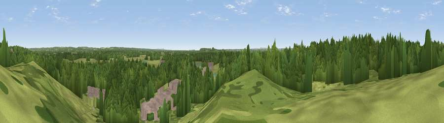

Foxbury Hill
#39175 in England · top 67% of its area beats it · near St LeonardsThe view, rendered

A 360° render of this exact spot computed from the terrain model, tree cover and land cover — summer colours, afternoon light, calibrated against photographs of famous viewpoints. Real trees, hedges and buildings will differ in detail.
The panorama
Grey silhouette: terrain skyline in each direction (720 bearings, Earth curvature and refraction included). Dashed green: skyline with trees (+15 m) and buildings (+8 m) as obstacles. Blue strip: how far the ground is visible on each bearing.
Where the view opens
Wedge length = distance to the farthest visible ground on that bearing (vegetation-aware). Rings at 10, 25 and 50 km.
What fills the view
56% woodland · 33% grassland · 8% built-up · 2% cropland · 1% wetland
Angular shares of the visible panorama (visual magnitude), not map area. Landscape diversity 0.44 (0–1 Shannon).
Key numbers
More beautiful places nearby
The staircase of upgrades: each row has a higher view potential than everything closer. Driving times are estimates from straight-line distance, calibrated against real road routing — check an actual route before setting out.
| Place | Direction | Drive | Score |
|---|---|---|---|
| Viewpoint near St Leonards | N · 1 km | ~2 min | 37.9 |
| Viewpoint near Hurn | S · 4 km | ~9 min | 53.7 |
| Viewpoint near Bournemouth | SSW · 10 km | ~20 min | 54.2 |
| Warren Hill | SSE · 11 km | ~20 min | 60.1 |
| Viewpoint near Corfe Mullen | WSW · 16 km | ~28 min | 60.9 |
| Viewpoint near Cranborne | NNW · 19 km | ~32 min | 65.0 |
| Viewpoint near Studland | SSW · 21 km | ~35 min | 80.9 |
| Viewpoint near Studland | SSW · 21 km | ~36 min | 82.2 |
50.80459, -1.81724 · source: osm peak · position refined by local search. Computed location — check access rights before visiting.